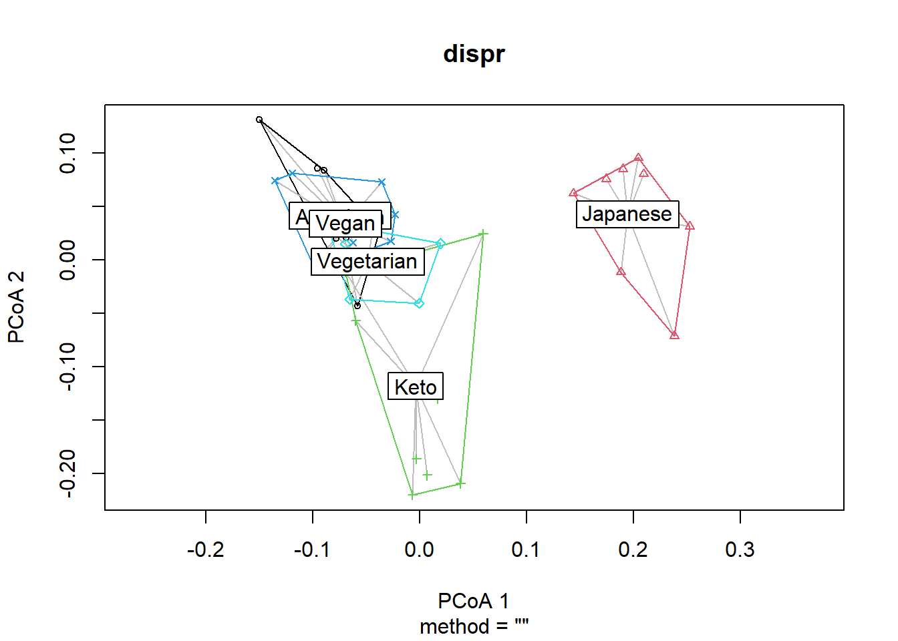
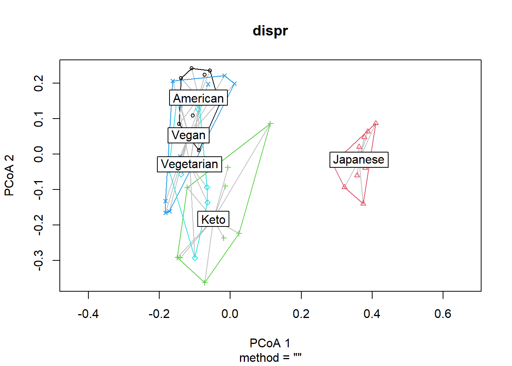

Perform ordination
Introduction
In this section, we will take the phylogeny of food items into account in clustering individuals according to their dietary data. In order to do so, we will use the phyloseq package, which uses phylogeny of microbes and their abundance. We will replace microbes with food items consumed by our dietary study participants.
Load the necessary packages and functions
Name your main directory for future use.
main_wd <- "~/GitHub/DietDiveR"If you have not downloaded and installed the phyloseq package yet, you can do so by first installing BiocManager (if you have not done so):
if (!require("BiocManager", quietly = TRUE)) install.packages("BiocManager")Then download and install the phyloseq package.
BiocManager::install("phyloseq")Install the devtools package necessary for installing the pairwiseAdonis package.
if (!require("devtools", quietly = TRUE))install.packages("devtools")## Warning: package 'devtools' was built under R version 4.1.3## Warning: package 'usethis' was built under R version 4.1.3##
## Attaching package: 'devtools'## The following object is masked from 'package:BiocManager':
##
## installInstall pairwise adonis function from Github. (https://github.com/pmartinezarbizu/pairwiseAdonis)
devtools::install_github("pmartinezarbizu/pairwiseAdonis/pairwiseAdonis")load the necessary packages.
library(phyloseq)##
## Attaching package: 'phyloseq'## The following object is masked _by_ '.GlobalEnv':
##
## distancelibrary(ggtree)
library(pairwiseAdonis)## Loading required package: vegan## Loading required package: permute##
## Attaching package: 'permute'## The following object is masked from 'package:devtools':
##
## check## Loading required package: lattice## This is vegan 2.5-7Load necessary functions and ggplot formatting themes.
source("lib/specify_data_dir.R")
source("lib/ordination.R")
source("lib/ggplot2themes.R")
source("lib/sort_IFC_by_ID.R")
source("lib/plot.axis.1to4.by.factor.R")Load the distinct 100 colors for use.
distinct100colors <- readRDS("lib/distinct100colors.rda") You can come back to the main directory by:
setwd(main_wd)Create a phyloseq object for ordination
Specify the directory where the data is.
SpecifyDataDirectory(directory.name = "eg_data/VVKAJ/")## [1] "The data directory has been set as"## [1] "~/GitHub/DietDiveR/eg_data/VVKAJ/"Load files for creating a phyloseq object
Food
Load IFC table, and sort the columnnames (userID), leaving the last column (taxonomy) intact. This dataframe will be saved as food. Also, save food as a .txt file to be used in the “correlation between Axes and foods” section.
SortIFCByID(ifc.input = "Foodtree/VVKAJ_Items_f_id_s_m_QCed_4Lv.food.ifc.txt",
outfn.for.corr.axis = "Foodtree/VVKAJ_Items_f_id_s_m_QCed_4Lv.food.ifc_sorted.txt")food is a matrix of Food descriptions (rows) x SampleID (columns).
head(food)[1:6, 1:4]## vvkaj.00001 vvkaj.00002 vvkaj.00003 vvkaj.00004
## Milk NFS 0 0 0 0
## Milk whole 0 183 0 0
## Milk reduced fat 2 0 0 0 0
## Milk low fat 1 0 0 61 0
## Soy milk 0 0 0 0
## Almond milk sweetened 0 0 0 0Format the food object and create an ifc_table called IFC.
PrepFood(data= food)Taxonomy (tax)
tax <- read.delim("Foodtree/VVKAJ_Items_f_id_s_m_QCed_4Lv.tax.txt")Format the tax file and create a taxonomy table called TAX.
PrepTax(data= tax)Sample
meta <- read.table( "ind_metadata_UserxDay.txt", sep="\t", header=T)Format the metadata file and save it as SAMPLES.
PrepMeta(data= meta)Foodtree
foodtree <- read_tree("Foodtree/VVKAJ_Items_f_id_s_m_QCed_4Lv.tree.nwk")It is OK to see a message saying that
“Found more than one class”phylo” in cache; using the first, from namespace ‘phyloseq’
Also defined by ‘tidytree’“.
Format foodtree and save it as TREE.
PrepTree(data= foodtree)Again, it is OK to see the same message as the previous line.
Create a phyloseq object with IFC, TAX, SAMPLES, and TREE
phyfoods <- phyloseq(IFC, TAX, SAMPLES, TREE)It is OK to see a message (or multiple of them) saying that
Found more than one class “phylo” in cache; using the first, from namespace ‘phyloseq’
Also defined by ‘tidytree’.
Check your metadata
Show the sample names and ensure they are vvkaj.00xxx.
sample_names(phyfoods)## [1] "vvkaj.00001" "vvkaj.00002" "vvkaj.00003" "vvkaj.00004" "vvkaj.00005"
## [6] "vvkaj.00006" "vvkaj.00007" "vvkaj.00008" "vvkaj.00009" "vvkaj.00010"
## [11] "vvkaj.00011" "vvkaj.00012" "vvkaj.00013" "vvkaj.00014" "vvkaj.00015"
## [16] "vvkaj.00016" "vvkaj.00017" "vvkaj.00018" "vvkaj.00019" "vvkaj.00020"
## [21] "vvkaj.00021" "vvkaj.00022" "vvkaj.00023" "vvkaj.00024" "vvkaj.00025"
## [26] "vvkaj.00026" "vvkaj.00027" "vvkaj.00028" "vvkaj.00029" "vvkaj.00030"
## [31] "vvkaj.00031" "vvkaj.00032" "vvkaj.00033" "vvkaj.00034" "vvkaj.00035"
## [36] "vvkaj.00036" "vvkaj.00037" "vvkaj.00038" "vvkaj.00039" "vvkaj.00040"
## [41] "vvkaj.00041" "vvkaj.00042" "vvkaj.00043" "vvkaj.00044" "vvkaj.00045"Show metadata.
head(sample_data(phyfoods), n=3)## SampleID UserName StudyDayNo Diet Gender Age Weight Height
## vvkaj.00001 vvkaj.00001 VVKAJ101 1 Vegetarian M 31 79 186
## vvkaj.00002 vvkaj.00002 VVKAJ101 2 Vegetarian M 31 79 186
## vvkaj.00003 vvkaj.00003 VVKAJ101 3 Vegetarian M 31 79 186
## BMI Waist.Circumference
## vvkaj.00001 22.83501 80
## vvkaj.00002 22.83501 80
## vvkaj.00003 22.83501 80Check the level 1 foods in your food tree.
L1s = tax_table(phyfoods)[, "L1"]
as.vector(unique(L1s))## [1] "L1_Milk_and_Milk_Products"
## [2] "L1_Meat_Poultry_Fish_and_Mixtures"
## [3] "L1_Eggs"
## [4] "L1_Dry_Beans_Peas_Other_Legumes_Nuts_and_Seeds"
## [5] "L1_Grain_Product"
## [6] "L1_Fruits"
## [7] "L1_Vegetables"
## [8] "L1_Fats_Oils_and_Salad_Dressings"
## [9] "L1_Sugars_Sweets_and_Beverages"Perform ordination with weighted unifrac distance
Change to the folder called “Ordination” in your “VVKAJ” folder.
SpecifyDataDirectory(directory.name = "eg_data/VVKAJ/Ordination/")Perform Principal Coordinate Analysis (PCoA) with weighted unifrac distance of your food data. Ordination by UNweighted unifrac distances can be done by having the “weighted” argument as FALSE. This may take a few minutes depending on your data size. e.g. a large phyloseq object (7.9 MB) takes ~ 1 min.
ordinated <- phyloseq::ordinate(phyfoods, method="PCoA", distance="unifrac", weighted=TRUE) Save the percent variance explained as a txt file.
Eigen(eigen.input = ordinated$values$Relative_eig,
output.fn="VVKAJ_Items_f_id_s_m_QCed_4Lv_ord_WEIGHTED_eigen_percent.txt")Merge the first n axes to the metadata and save it as a txt file. This will be used for plotting ordination results.
MergeAxesAndMetadata(ord.object=ordinated, number.of.axes=10, meta.data= meta,
output.fn= "VVKAJ_Items_f_id_s_m_QCed_4Lv_ord_WEIGHTED_meta_users.txt")Plot your ordination results
Read in the eigenvalues for axis labels of biplots.
eigen_loaded <- read.table("VVKAJ_Items_f_id_s_m_QCed_4Lv_ord_WEIGHTED_eigen_percent.txt", header=T)Make a vector that contains the variance explained.
eigen_loaded_vec <- eigen_loaded[, 2]Read in the metadata and users’ Axis values.
meta_usersdf <- read.table("VVKAJ_Items_f_id_s_m_QCed_4Lv_ord_WEIGHTED_meta_users.txt", header=T) Change Diet to a factor so that factor levels will be displayed in order.
meta_usersdf$Diet <- factor(meta_usersdf$Diet,
levels= c("Vegetarian", "Vegan", "Keto", "American", "Japanese")) Take a look at meta_usersdf that has been loaded.
head(meta_usersdf, 3)## Row.names SampleID UserName StudyDayNo Diet Gender Age Weight
## 1 vvkaj.00001 vvkaj.00001 VVKAJ101 1 Vegetarian M 31 79
## 2 vvkaj.00002 vvkaj.00002 VVKAJ101 2 Vegetarian M 31 79
## 3 vvkaj.00003 vvkaj.00003 VVKAJ101 3 Vegetarian M 31 79
## Height BMI Waist.Circumference Axis.1 Axis.2 Axis.3
## 1 186 22.83501 80 -0.0442801041 0.02759311 -0.01355771
## 2 186 22.83501 80 -0.0007933678 -0.04075574 0.07943972
## 3 186 22.83501 80 -0.0842314600 0.02669820 -0.02079188
## Axis.4 Axis.5 Axis.6 Axis.7 Axis.8 Axis.9
## 1 -0.04497503 0.06643215 -0.04633301 0.03528304 -0.03953240 0.04564185
## 2 -0.02767431 -0.05829929 0.02566912 -0.01358921 -0.03447211 -0.11926416
## 3 -0.10074383 0.03985384 0.01108057 -0.02331700 -0.03071878 -0.04394001
## Axis.10
## 1 0.03792176
## 2 -0.04040412
## 3 -0.03060788Save Axes 1 & 2, 1 & 3, 2 & 3, 3 & 4, 2 & 4 biplots with and without ellipses with specified confidence interval.
The results are saved with filenames with the specified “prefix_AxisXY.pdf” or “prefix_AxisXY_ellipses.pdf”. You need to supply the same number of colors in the order of the factor level to be used. dot.colors are for datapoints, and ellipses.colors are for ellipses outlines.
PlotAxis1to4ByFactor(axis.meta.df = meta_usersdf,
factor.to.color = "Diet",
eigen.vector = eigen_loaded_vec,
dot.colors = distinct100colors,
ellipses.colors = distinct100colors,
ellipses.cflevel = 0.95,
out.prefix = "VVKAJ_Items_f_id_s_m_QCed_4Lv_ord_WEIGHTED_diet"
)The function above saves 10 biplots in the PDF format. Let us take a look at Axis 1 vs. Axis 2.

It seems that Axis1 separated the Japanese diet group from the rest, and Axis2 separated the Keto diet group from the rest.
Permanova tests
Some of the Diet groups seem to form distinct clusters. Use beta-diversity and adonis (permanova) tests to see if they are actually distinct from one another.
Generate a weighted unifrac distance matrix.
dist_matrix <- phyloseq::distance(phyfoods, method = "wunifrac")Perform dispersion test.
vegan::betadisper computes centeroids and distance of each datapoint from it.
dispr <- vegan::betadisper(d=dist_matrix, phyloseq::sample_data(phyfoods)$Diet)Show the centroids and dispersion of each group.
plot(dispr)
Use dispr to do a permutation test for homogeneity of multivariate dispersion. The set.seed function ensures the same permutation results will be obtained every time; otherwise, the p-values will slightly differ each run, as it is a permutation test.
set.seed(123)
vegan::permutest(dispr, perm=5000)##
## Permutation test for homogeneity of multivariate dispersions
## Permutation: free
## Number of permutations: 5000
##
## Response: Distances
## Df Sum Sq Mean Sq F N.Perm Pr(>F)
## Groups 4 0.022031 0.0055078 2.6938 5000 0.04839 *
## Residuals 40 0.081785 0.0020446
## ---
## Signif. codes: 0 '***' 0.001 '**' 0.01 '*' 0.05 '.' 0.1 ' ' 1If p>0.05, the dispersion of each group are not different, and the assumption for adonis is met. The results here indicate that the dispersion of each group may be different, so we should consider this information in discussion. Nevertheless, we will proceed for demonstration purposes.
Use adonis to test whether there is a difference between groups’ composition. i.e., composition among groups (food they consumed) is similar or not.
set.seed(123)
vegan::adonis(dist_matrix ~ phyloseq::sample_data(phyfoods)$Diet, permutations = 5000)##
## Call:
## vegan::adonis(formula = dist_matrix ~ phyloseq::sample_data(phyfoods)$Diet, permutations = 5000)
##
## Permutation: free
## Number of permutations: 5000
##
## Terms added sequentially (first to last)
##
## Df SumsOfSqs MeanSqs F.Model R2
## phyloseq::sample_data(phyfoods)$Diet 4 0.9401 0.235020 3.4251 0.25513
## Residuals 40 2.7447 0.068617 0.74487
## Total 44 3.6848 1.00000
## Pr(>F)
## phyloseq::sample_data(phyfoods)$Diet 2e-04 ***
## Residuals
## Total
## ---
## Signif. codes: 0 '***' 0.001 '**' 0.01 '*' 0.05 '.' 0.1 ' ' 1If overall adonis is significant, which is true in this case, you can run pairwise adonis to see which group pairs are different.
pairwise.adonis(dist_matrix, phyloseq::sample_data(phyfoods)$Diet, perm = 5000,
p.adjust.m = "none") ## pairs Df SumsOfSqs F.Model R2 p.value
## 1 Vegetarian vs Vegan 1 0.07557735 1.178911 0.06862547 0.20815837
## 2 Vegetarian vs Keto 1 0.13097005 1.888662 0.10557872 0.00739852
## 3 Vegetarian vs American 1 0.15189915 2.540675 0.13703252 0.00019996
## 4 Vegetarian vs Japanese 1 0.31482162 5.654587 0.26112652 0.00039992
## 5 Vegan vs Keto 1 0.19900379 2.430678 0.13188217 0.00019996
## 6 Vegan vs American 1 0.16773768 2.319599 0.12661843 0.00019996
## 7 Vegan vs Japanese 1 0.36815946 5.398094 0.25226984 0.00019996
## 8 Keto vs American 1 0.21818296 2.813418 0.14954314 0.00019996
## 9 Keto vs Japanese 1 0.32249324 4.391284 0.21535104 0.00019996
## 10 American vs Japanese 1 0.40135753 6.282904 0.28196075 0.00019996
## p.adjusted sig
## 1 0.20815837
## 2 0.00739852 *
## 3 0.00019996 **
## 4 0.00039992 **
## 5 0.00019996 **
## 6 0.00019996 **
## 7 0.00019996 **
## 8 0.00019996 **
## 9 0.00019996 **
## 10 0.00019996 **This table indicates all the combination of the five diets are significantly different (p<0.05) except Vegetarian vs. Vegan. We expect Vegetarian and Vegan diets to be similar, so this makes sense.
Save weighted unifrac distance matrix
Generate and save a weighted unifrac distance matrix of “Samples”.
WeightedUnifracDis(input.phyloseq.obj = phyfoods,
output.fn = "VVKAJ_Items_f_id_s_m_QCed_4Lv_WEIGHTED_uni_dis.txt") Perform ordination with unweighted unifrac distance
You can perform Principal Coordinate Analysis (PCoA) with UNweighted unifrac distance of your food data.
ordinated_u = phyloseq::ordinate(phyfoods, method="PCoA", distance="unifrac", weighted=FALSE) Use the same code above for creating plots, but now with ordinated_u for the ord.object argument, and change WEIGHTED to UNweighted, or an appropriate name for the method you selected.
Save the percent variance explained as a txt file.
Eigen(eigen.input = ordinated_u$values$Relative_eig,
output.fn="VVKAJ_Items_f_id_s_m_QCed_4Lv_ord_UNweighted_eigen_percent.txt")Merge the first n axes to the metadata and save it as a txt file. This will be used for plotting ordination results.
MergeAxesAndMetadata(ord.object=ordinated_u, number.of.axes=10, meta.data= meta,
output.fn= "VVKAJ_Items_f_id_s_m_QCed_4Lv_ord_UNweighted_meta_users.txt")Plot your ordination results
Read in the eigenvalues for axis labels of biplots.
eigen_loaded <- read.table("VVKAJ_Items_f_id_s_m_QCed_4Lv_ord_UNweighted_eigen_percent.txt", header=T)Make a vector that contains the variance explained.
eigen_loaded_vec <- eigen_loaded[, 2]Read in the metadata and users’ Axis values.
meta_usersdf <- read.table("VVKAJ_Items_f_id_s_m_QCed_4Lv_ord_UNweighted_meta_users.txt", header=T) Change Diet to a factor so that factor levels will be displayed in order.
meta_usersdf$Diet <- factor(meta_usersdf$Diet,
levels= c("Vegetarian", "Vegan", "Keto", "American", "Japanese")) Take a look at meta_usersdf that has been loaded.
head(meta_usersdf, 3)## Row.names SampleID UserName StudyDayNo Diet Gender Age Weight
## 1 vvkaj.00001 vvkaj.00001 VVKAJ101 1 Vegetarian M 31 79
## 2 vvkaj.00002 vvkaj.00002 VVKAJ101 2 Vegetarian M 31 79
## 3 vvkaj.00003 vvkaj.00003 VVKAJ101 3 Vegetarian M 31 79
## Height BMI Waist.Circumference Axis.1 Axis.2 Axis.3
## 1 186 22.83501 80 -0.09008072 0.12526150 0.224690714
## 2 186 22.83501 80 -0.10016605 -0.29241014 0.008973829
## 3 186 22.83501 80 -0.17290956 -0.04453934 0.065796514
## Axis.4 Axis.5 Axis.6 Axis.7 Axis.8 Axis.9
## 1 -0.09324589 0.008335857 -0.08133357 -0.1488169 0.02877081 -0.06084911
## 2 -0.19562671 -0.091767769 0.08512958 -0.1743513 0.05350784 -0.03272327
## 3 -0.18999341 0.134560378 0.14815162 -0.1078155 -0.13799218 0.25383971
## Axis.10
## 1 0.11004841
## 2 -0.04213860
## 3 0.03525768Save Axes 1 & 2, 1 & 3, 2 & 3, 3 & 4, 2 & 4 biplots with and without ellipses with specified confidence interval. The results are saved with filenames with the specified “prefix_AxisXY.pdf” or “prefix_AxisXY_ellipses.pdf”. You need to supply the same number of colors in the order of the factor level to be used. dot.colors are for datapoints, and ellipses.colors are for ellipses outlines.
PlotAxis1to4ByFactor(axis.meta.df = meta_usersdf,
factor.to.color = "Diet",
eigen.vector = eigen_loaded_vec,
dot.colors = distinct100colors,
ellipses.colors = distinct100colors,
ellipses.cflevel = 0.95,
out.prefix = "VVKAJ_Items_f_id_s_m_QCed_4Lv_ord_UNweighted_diet"
)Permanova tests
Some of the Diet groups seem to form distinct clusters. Use beta-diversity and adonis tests to see if they are actually distinct from one another.
Generate a weighted unifrac distance matrix.
dist_matrix <- phyloseq::distance(phyfoods, method = "unifrac") # UNweightedDispersion test and plot
vegan::betadisper computes centeroids and distance of each datapoint from it.
dispr <- vegan::betadisper(d=dist_matrix, phyloseq::sample_data(phyfoods)$Diet)Show the centroids and dispersion of each group.
plot(dispr)
Use dispr to do a permutation test for homogeneity of multivariate dispersion.
set.seed(123)
vegan::permutest(dispr, perm=5000)##
## Permutation test for homogeneity of multivariate dispersions
## Permutation: free
## Number of permutations: 5000
##
## Response: Distances
## Df Sum Sq Mean Sq F N.Perm Pr(>F)
## Groups 4 0.047486 0.0118715 10.91 5000 2e-04 ***
## Residuals 40 0.043525 0.0010881
## ---
## Signif. codes: 0 '***' 0.001 '**' 0.01 '*' 0.05 '.' 0.1 ' ' 1If p>0.05, the dispersion of each group are not different, and the assumption for adonis is met. The results here indicate that the dispersion of each group may be different, so we should consider this information in discussion. Nevertheless, we will proceed for demonstration purposes.
Use adonis to test whether there is a difference between groups’ composition. i.e., composition among groups (food they consumed) is similar or not.
set.seed(123)
vegan::adonis(dist_matrix ~ phyloseq::sample_data(phyfoods)$Diet, permutations = 5000)##
## Call:
## vegan::adonis(formula = dist_matrix ~ phyloseq::sample_data(phyfoods)$Diet, permutations = 5000)
##
## Permutation: free
## Number of permutations: 5000
##
## Terms added sequentially (first to last)
##
## Df SumsOfSqs MeanSqs F.Model R2
## phyloseq::sample_data(phyfoods)$Diet 4 3.696 0.92399 2.2278 0.18219
## Residuals 40 16.590 0.41475 0.81781
## Total 44 20.286 1.00000
## Pr(>F)
## phyloseq::sample_data(phyfoods)$Diet 2e-04 ***
## Residuals
## Total
## ---
## Signif. codes: 0 '***' 0.001 '**' 0.01 '*' 0.05 '.' 0.1 ' ' 1If overall adonis is significant, which is true in this case, you can run pairwise adonis to see which group pairs are different.
pairwise.adonis(dist_matrix, phyloseq::sample_data(phyfoods)$Diet, perm = 5000,
p.adjust.m = "none") ## pairs Df SumsOfSqs F.Model R2 p.value
## 1 Vegetarian vs Vegan 1 0.4374127 0.9882078 0.05817022 0.50789842
## 2 Vegetarian vs Keto 1 0.6542830 1.5148347 0.08648867 0.00139972
## 3 Vegetarian vs American 1 0.7838799 1.7984651 0.10104608 0.00019996
## 4 Vegetarian vs Japanese 1 1.1927048 3.1013470 0.16236274 0.00039992
## 5 Vegan vs Keto 1 0.7691534 1.7648633 0.09934573 0.00059988
## 6 Vegan vs American 1 0.7535836 1.7136319 0.09674085 0.00019996
## 7 Vegan vs Japanese 1 1.2403751 3.1929421 0.16636022 0.00019996
## 8 Keto vs American 1 0.9196267 2.1434374 0.11813844 0.00019996
## 9 Keto vs Japanese 1 1.1584619 3.0666706 0.16083933 0.00019996
## 10 American vs Japanese 1 1.3304323 3.4855237 0.17887760 0.00019996
## p.adjusted sig
## 1 0.50789842
## 2 0.00139972 *
## 3 0.00019996 **
## 4 0.00039992 **
## 5 0.00059988 **
## 6 0.00019996 **
## 7 0.00019996 **
## 8 0.00019996 **
## 9 0.00019996 **
## 10 0.00019996 **Similarly to the results with weighted unifrac distances, this table also indicates all the combination of the five diets are significantly different (p<0.05) except Vegetarian vs. Vegan. We expect Vegetarian and Vegan diets to be similar, so this makes sense.
Save unweighted unifrac distance matrix
Generate and save an unweighted unifrac distance matrix of “Samples”.
UnweightedUnifracDis(input.phyloseq.obj = phyfoods,
output.fn = "VVKAJ_Items_f_id_s_m_QCed_4Lv_UNweighted_uni_dis.txt") Come back to the main directory before you start running another script.
setwd(main_wd)